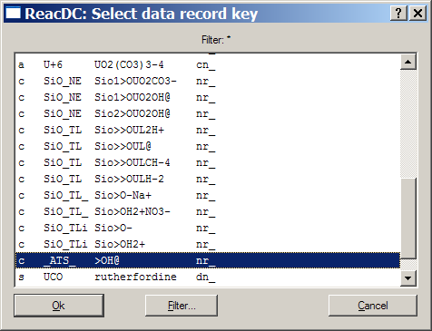

GEM-Selektor version 2-PSI
GEM-Selektor version 2-PSI
SCREENSHOT GALLERY
TUTORIAL
Previous Page
Back to Start Page
(43) Creating a project
for surface complexation modelling
In this
section, we will create a modelling project to run a GEM TLM (triple
layer model)
for adsorption of hexavalent uranium (uranyl UO2+2,
abbreviated as UL) on SiO2 solids, described in detail by
Kulik
[Radiochimica Acta
2002,
v.90,
p.815-832],
Section 7. The paper can also be downloaded as a pdf
file
from the journal's web site. The necessary surface species and
sorption
phase definitions are provided in the (inofficial) "sorption" part of
the
kernel GEMS-PSI database. New ReacDC records and sorption Phase records
can be created as described on the previous page of this tutorial.
As usual,
start GEM-Selektor and click on the "Calculation of Equilibria" button,
then click on the "New Project" button. In the dialog shown below,
enter two fields
of a new Project record key as shown, and click "Ok" to proceed.
This will
bring you to the "Elements Dialog" where the stoichiometry of the
project system should be set up.
Here, check
on
the "Sorption" chekbox in the "Phases/Data" row to include kernel
database
files for sorption models. Then select the elements U, Na,
Si, C,
N, Nit, F, O, H, e by clicking on their symbols, as
shown
above. Click on the "Ok" button when ready.
Next, a setup dialog for
aqueous and gas phases will appear (shown below). Click on the "Ok"
button - this will select the Davies model for aqueous activity
coefficients and the ideal
mixture model for gases (defaults).
In a few
seconds (depending on the performance of your PC), you should see the
"Modelling Project" dialog:

This means that
the project has been successfully created.
However, before defining the
first chemical system, let us go into the database and look how the
surface species can be defined through ReacDC records and how Phase
records should be set up for the sorption phases, including a selected
electrostatic or non-electrostatic surface complexation model
(SCM). This sidebar is important for developing skills in
creating various SCMs on your own, including the state-of-the art
CD-MUSIC electrostatic SCMs (in GEMS implementation, of
course).
Before proceeding with the modeling of U(VI) adsorption on SiO2
phases, let us create a set of species and phase definitions for MUSIC
model of surface charge on gibbsite Al(OH)3. The underlying
concepts and thermodynamic constants are described in the chapter by
D.Kulik in the "Surface complexation modelling" book (ed.
J.Lutzenkirchen), Elsevier, 2006. The respecitve fragment of the text
is provided here (pdf file) for your
convenience.
Later on
in this Tutorial, we will construct and
run the gibbsite GEM-MUSIC surface charge titration model after
considering the 2pK SCM for uranyl adsorption on quartz and silica.
Now, click
on
the "Back" button to return to the main GEMS dialog and select there
the "Thermodynamic Database" mode, which will bring you into this
dialog:

Click here on "Dependent Components (ReacDC)" button to open ReacDC
module window. In that window, click on the "Display Selected Record"
toolbar button ( ) and, in the appearing list of
ReacDC record keys, find those beginning with "c" and, among them, the
one with the key "c:_ATS_:>OH@:nr_", as shown below.
) and, in the appearing list of
ReacDC record keys, find those beginning with "c" and, among them, the
one with the key "c:_ATS_:>OH@:nr_", as shown below.

Click
"Ok" to load the record and get back to the ReacDC window:
What you see now is the reaction defining the >OH0
surface species, used in GEM implementation of 2pK surface complexation
models (SCM) as a placeholder for the neutral amphoteric SOH group
(considered as a "surface solvent"). This or similar species is used in
other reactions defining protonated SOH2+,
de-protonated SO- surface species, as well as inner-
and outer-sphere surface complexes of aqueous cations and
ligands. In GEMS versions earlier than 2.1.0, the data
fields BetAl_ and ab_ were not used
for surface species. In more recent versions of the
program, these fields contain the "dentateness" or
coordination number; the Frumkin exponent parameter; the zero-plane
charge; and the beta- or third-plane charge of this surface species,
respectively.
The MUSIC model of surface charging of SiO2 surfaces
(cristobalite, quartz, amorphous silica) results in the same
stoichiometry of (de) protonated surface species as the traditional 2pK
model. This is because silicon is tetra-coordinated with oxygens in
such minerals, hence, the Pauling bond valence is 1 and the
deprotonated Si-O- surface group has the formal charge of -1 on the
zero plane. So, in both MUSIC and 2pK models, the surface protonation
process is described with two reactions:
Si-O- + H+ = Si-OH0
K1
= 8.1
(1)
Si-OH0 + H+ = Si-OH2+
K2
= -4.4 (about -1 in traditional 2pK
SCMs).
(2)
The neutral species Si-OH0 + does not contribute
to measurable surface proton charge at all. The doubly protonated Si-OH2+
does not contribute at pH > 1.
To exclude silicon
from elemental stoichiometries of surface species, the stoichiometry of
the Si-OH0
species should be taken as O0.5H0, with
thermodynamic properties defined on the ReacDC screenshot above.
Let us take a look on the ReacDC definition of the Si-O- surface species. Click on the "Display
Selected Record" toolbar button ( ) and choose
the record key "c:SiO_TLi:Sio>O-:nr_:". Press "Ok" to load
the record and get it in the ReacDC window:
The reaction defined in this ReacDC record is a reverted reaction (1)
above. The elemental stoichiometry of the singly coordinated >O-
species on silica surfaces is O0.5-; the standard molal Gibbs energy
(at standard surface density of 20 micromol per m2)
calculated through this reaction is -82.31 kJ/mol. The -1 negative
charge of this inner-sphere surface species is allocated at 0 surface
plane.
Likewise,
you can examine the record key "c:SiO_TLi:Sio>OH2+:nr_:" which is a
definition of the >OH2+ surface species via
(reversed) reaction (2). Later on, you will see that even with logK =
1.1 (standard Gibbs energy -122.27 kJ/mol), this species is not stable
enough to make a significant contribution to surface charge. Many
chemists believe that SiO2 surfaces cannot protonate.
Now, open the ReacDC record "c:SiO_TL_:Sio>O-Na+:nr_:" :
This ReacDC defines properties of the outer-sphere surface complex of Na+
on deprotonated silanol sites through the reaction
Si-OH0 + Na+ =
Si-O-Na+ + H+
K1Na
= -7.4
(3)
According to the conventional stoichiometry O0.5H of the
>OH0 group, the elemental stoichiometry of the >O-Na+
species is O0.5Na0, i.e. it is
electroneutral as the whole. However, as seen in the ab_ fields, for
this species, the charge of -1 is allocated to the zero- plane and +1
to the beta-plane, as typically done in Basic Stern (BS) or Triple
Layer (TL) SCMs.
Hydrolysis-type reactions similar to (3) are also used in defining
inner-sphere cationic surface complexes. For instance, you can open the
ReacDC
record "c:SiO_TL:Sio>>OUL@:nr_:" which describes the
doubly-coordinated inner-sphere uranyl surface species >>OUO2@:
This
ReacDC uses the reaction
2Si-OH0 + UO2+2
= Si2>OUO20 + 2H+
KUL1 = -7.5
(4)
Two >OH0 species are consumed because this uranyl surface
complex is taken as doubly coordinated. However, this does not mean
automatically that such a doubly-coordinated surface species must be
considered as bi-dentate, especially if it is bound to sites of
specific type. More about site types will be discussed along with Phase
definition for the sorption phase later in this tutorial.
Another ReacDC record "c:SiO_TL:Sio>>OULH-2:nr_:" describes the
doubly-coordinated inner-sphere uranyl surface hydroxocomplex
>>OUO2(OH)2-2 (screenshot not
shown here) constructed according to the following reaction:
2Si-OH0 + UO2+2
+ 2H2O = Si2>OUO2(OH)2-2
+ 4H+ KULH1 = -17.8
(5)
Formation of this surface complex can also be viewed as an attachment
of the UO2(OH)20
aqueous complex to two surface >OH0 groups.
At high dissolved UVI concentrations (> 10
micromolal), it is likely that polynuclear uranyl surface
complexes will form. The simplest possible one is defined in ReacDC
record
"c:SiO_TL:Sio>>OUL2H+:nr_:" where it is
constructed according to the reaction
2Si-OH0 + 2UO2+2
+ H2O = Si2>O(UO2)2(OH)+
+ 3H+ KUL2 = -10.1
(6)
This species is also considered as doubly-coordinated (to two adjacent
surface oxygens) but monodentate one, although other microscopic
configurations (e.g. tetra-coordinated bidentate) are also possible.
Under natural conditions, in presence of carbon dioxide, UVI
forms extremely strong carbonate aqueous complexes. Hence, it is likely
that ternary uranyl - carbonate - surface complexes are present on
mineral - water interfaces. In the model considered here, one such
surface complex is defined in the ReacDC record with key "c:SiO_TL:Sio>>OULCH-4:nr_:" shown below:
Properties
of the ternary uranyl-carbonate-surface complex shown above are defined
according to the reaction:
2Si-OH0 + UO2+2
+ CO20 + 3H2O = Si2>OUO2(OH)2(CO3)-4
+ 6H+ KULH1 = -24.9
(7)
As shown in the ab_ field, the
surface complex is considered inner-sphere and the whole charge is
allocated to the zero EDL plane. This is a simplification because, in
microscopic reality, at least part of the surface charge of adsorbed
carbonate ions may be located further away from the surface. Such
phenomena can be described in CD MUSIC models as suggested by
T.Hiemstra and W. van Riemsdijk.
In order to include the surface complexation model into GEM chemical
system definition (CSD), the surface species defined in ReacDC records
must be integrated in a Phase record of special (sorption) type. Let us
first take a look at a Phase record provided in the default GEMS
database and copied in our newly-created modelling project.
To do this, switch back to the "Thermodynamic Database Management"
dialog and click there on "Thermodynamic Phases (Phase)" button to open
the Phase module window. In this window use the "Display Selected
Record" toolbar button ( ) and, in the appearing list of
Phase record keys, find the one beginning with "x", namely, the "x:SIL_U:SiO2_1sTLM:xc:xTLM_np_:" record key, mark it,
and press "Ok". You should see the following:
This Phase record contains the whole setup of GEM sorption phase, which
defines the sorbent (always the last component in the list marked with
the 'Q' code in the PhDCC column, in this case quarts Qtz) and the
surface species (marked with Y, Z or X ).
The table SAT_C (next to the
right of the species record key list) contains the setup of the GEM
SCM, which can be either single-surface single-site, or multi-surface
multi-site, or single-surface multi-site one. Each surface (type) can
hold either a non-electrostatic or an electrostatic EDL model. For
instance, particles of montmorillonite can be represented with two
surface types: (0) edge surfaces with silanol- and aluminol-like amphoteric SOH groups and (1)
siloxane basal planes with permanent charge, exchange cations attracted
by this charge, but without dangling oxygen bonds and amphoteric SOH
groups. Accordingly, an electrostatic SCM such as BS or TL can be
used on the surface type (0), and a non-electrostatic model can be
applied to surface type (1) assuming that the permanent charge is
always fully compensated with exchange cations.
Modern multi-site (MUSIC) SCMs consider the oxide surface as exposing
one, two, three or more types of reactive sites, each forming surface
complexes in singly-, doubly-, triply- or tetra-coordinated fashion.
Each site type has its own surface density where two or more surface
complexes formed on this site type may compete. However, the
electrostatic EDL model of choice is applied commonly to all species
and sites developed on this surface.
In the Phase window (Page 1) shown above, surface species are allocated
to surface- and site types in the SAT_C table columns.
Codes in the SAT_C[0] column ('L' for most surface
species which means competitive Langmuir isotherm) define the impact of
site density parameter to density of surface species.
SAT_C[1] column allocates
surface species to the whole sorbent ('V') or to some of its
end members (irrelevant for the present model).
SAT_C[2] column allocates
each surface species to a surface type, numbered from 0 to 5 (maximum 6
surface types per phase are technically possible); the surface types
are described on Page 3 of the Phase window (will be shown later).
SAT_C[3] column allocates each
surface species to a site type, counted from 0 until 5 separately for
each surface type. In other words, maximum 36 site types can be
considered on all surfaces of one sorption phase. To each site type,
one, many, or no surface species can belong.
SAT_C[4] column is important
for multi-layer EDL models such as TL or 3L because it allocates the
outer-sphere surface charge of a surface complex to beta- or third
plane.
SAT_C[5]column contains codes
of units in which densities of surface site types are expressed (for
now, only 'n' - in nm-2).
.
The site densities are entered into the MaSDj[0] column located next
to the SAT_C
table. Equal numbers
must be entered against all surface species competing for sites of the
same type; in other words, competition on each site type on each
surface type is considered separately via computing special activity
coefficients (SACT) which replace balance constraints on total number
of sites.
The second [1] column of the MaSDj table contains for
each surface complex the unit charge allocated to 0 EDL surface plane
(i.e. the mineral surface). The MaSDj[2] column contains the
unit charge allocated to beta- or third EDL plane, depending on the
code in the SAT_C[4] column. Both
columns provide enough flexibility for implementing Stern EDL models,
as well as three-layer CD MUSIC models where the surface charge of a
species is distributed between 0, beta and third plane, differently for
various adsorbed cations and anions.
MaSDj[3] column (usually
contains zeros) may contain values of the Frumkin interaction parameter
used if the Frumkin isotherm is applied instead of the Langmuir
isotherm to some surface sites.
MaSDj[4] column
contains the "dentateness" of surface species, 1 for monodentate
(default), 2 for bidentate, 3 for tridentate, 4 for tetradentate ones.
This parameter (not to be mixed with the coordination number) describes
how many surface sites are covered by one adsorbed molecule thus making
them inaccessible to any other adsorbates. This parameter is used
in QCA isotherm - a polydentate form of the non-competitive Langmuir
isotherm.
MaSDj[5] column is reserved
for other parameters used in further development (e.g. BET isotherm).
Other important number on this page is DisPar[0] - the specific
surface area of the sorbent (usually taken from BET measurements), in
this case amorphous silica. All surface types sum up to this
specific surface area, each with its own fraction. The setup of surface
types and choice of EDL models is given on Page 3 of the Phase window:
On the
above screenshot, one surface type is defined with electrostatic TL EDL
model ('T'), occupying the whole sorbent surface (1), maximum
site density of 4.6 nm-2, the inner capacitance
parameter C1 = 1.0 F/m2, the outer capacitance C2=0.2 F/m2,
and zero permanent surface charge. Up to six surface types can be set
up on one sorbent, and the sum of their area fraction is not
necessarily 1. If this sum is less than 1 then part of the surface is
considered non-reactive. If this sum is much above 1 then at least one
surface type is assigned to internal surfaces, e.g. interlayer spaces
of clay minerals.
Having completed this tour on setup of ReacDC and Phase records
describing surface complexes and the sorption phase, we can continue
with setting up a chemical equilibrium model involving surface
complexation (next page of this tutorial). After working with this
model for UVI adsorption on quartz and silica, we will learn
how to create "from scratch" a sorption phase for the MUSIC SCM of
surface charge on gibbsite Al(OH)3.
To proceed with the uranyl sorption model, close the Phase and ReacDC
windows and switch back to the Main GEMS dialog.
Next
Page
Back
to main GEMS-PSI page
©
2003-2006 GEMS-PSI Development and
Support Team.